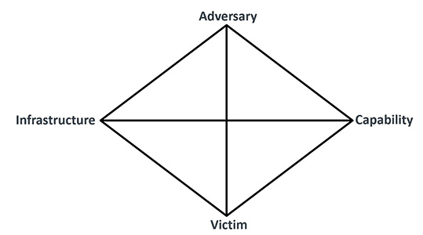

Modelo Diamante y Cyber Kill Chain
En esta actividad se analiza un escenario de malware utilizando dos modelos complementarios de analisis de intrusiones. Primero se identifican los elementos principales del ataque mediante el Modelo Diamante: adversario, capacidad, infraestructura y victima. Posteriormente, los eventos detectados se relacionan con las fases de la Cyber Kill Chain para comprender como se desarrollo la intrusion y como pudo propagarse dentro de la red.
El analisis de intrusiones es una parte fundamental de la ciberseguridad, ya que permite identificar como actuan los atacantes dentro de una red o sistema. Para comprender mejor estos incidentes, existen modelos como el Modelo Diamante y la Cyber Kill Chain, los cuales ayudan a organizar la informacion del ataque y relacionar sus diferentes etapas. Estos marcos de trabajo permiten a los equipos de seguridad no solo reaccionar ante incidentes, sino tambien anticiparse a futuros ataques mediante la comprension profunda de las tacticas, tecnicas y procedimientos (TTP) de los adversarios.
El Modelo Diamante, desarrollado por el Centro de Analisis de Intrusiones (CIA), establece que cualquier evento de intrusion puede describirse mediante cuatro elementos fundamentales: el adversario (quien realiza el ataque), la capacidad (las herramientas y tecnicas empleadas), la infraestructura (los recursos tecnologicos utilizados) y la victima (el objetivo afectado). Estos cuatro componentes se conectan formando una estructura en forma de diamante que permite visualizar las relaciones entre cada elemento.
Por otro lado, la Cyber Kill Chain, propuesta por Lockheed Martin, descompone el ciclo de vida de un ataque en siete fases secuenciales: reconocimiento, weaponizacion, entrega, explotacion, instalacion, comando y control (C2), y accion sobre el objetivo. Este enfoque ayuda a identificar en que etapa del ataque se encuentra el adversario y cuales son las medidas de defensa mas adecuadas para interrumpir la cadena de compromiso.
A continuacion, se presenta un escenario de infeccion por malware en una organizacion, donde se aplican ambos modelos para analizar los eventos detectados, responder preguntas clave sobre el incidente y comprender como el atacante logro moverse lateralmente dentro de la red comprometiendo multiples equipos.
Imagen 1.1. Diagrama Modelo Diamante

El Modelo Diamante organiza cualquier evento de intrusion en cuatro elementos principales:
| Elemento | Descripcion | Ejemplo practico |
|---|---|---|
| Adversario | Actor que realiza el ataque o la intrusion. | Grupo de ciberdelincuentes que distribuye malware. |
| Capacidad | Herramientas, tecnicas y conocimientos utilizados en el ataque. | Malware con conexion a servidores C2. |
| Infraestructura | Recursos utilizados para ejecutar el ataque. | Dominios maliciosos, IP externas y servidores C2. |
| Victima | Sistema, usuario u organizacion afectada. | Equipo de la empresa infectado con malware. |
Una organizacion detecta comportamiento anomalo en un equipo. El analisis revela:
| Metacaracteristica | Descripcion del evento |
|---|---|
| Marca de tiempo | Momento en que el SOC detecta actividad anomala en la red. |
| Fase | Compromiso e instalacion del malware. |
| Resultado | Equipo infectado y conexion establecida con C2. |
| Direccion | Comunicacion saliente desde la red interna hacia IP externas. |
| Metodologia | Phishing, ejecucion de malware y comunicacion remota. |
| Recursos | Malware, dominios C2, IP externas y herramientas de acceso remoto. |
Lista de eventos detectados durante el incidente:
| Evento | Fase Kill Chain (version clasica) | Justificacion |
|---|---|---|
| Deteccion de malware | No es una fase de la Kill Chain, es una deteccion. | La Kill Chain describe el ataque, no la defensa. La deteccion ocurre despues de la ejecucion. Nos indica que el atacante ya supero fases previas. |
El atacante utiliza el primer equipo comprometido para desplazarse lateralmente dentro de la red y comprometer otros dispositivos. El host inicial funciona como puente entre el atacante externo y la segunda victima. Esta tecnica, conocida como pivoting, permite al adversario expandir su control sobre la infraestructura de la organizacion sin necesidad de establecer nuevos vectores de ataque externos.
El escenario representa un ataque tipo APT basado en phishing y malware con infraestructura C2. El Modelo Diamante permite identificar la relacion entre adversario, capacidades, infraestructura y victimas, mientras que la Cyber Kill Chain ayuda a clasificar cada fase del ataque y comprender la progresion de la intrusion.
El analisis conjunto de ambos modelos revela que el atacante logro superar exitosamente las fases iniciales de la Kill Chain (reconocimiento, entrega y explotacion) para luego establecer persistencia mediante la conexion C2 y finalmente expandir su control mediante movimiento lateral. La deteccion tardia del incidente permitio que el adversario comprometiera multiples equipos, lo que subraya la importancia de implementar controles de seguridad que permitan interrumpir la cadena de ataque en sus etapas tempranas.
La combinacion del Modelo Diamante y la Cyber Kill Chain proporciona a los analistas de seguridad una vision integral del incidente: el primero ofrece una perspectiva estatica de los componentes del ataque, mientras que el segundo aporta una dimension temporal que describe la evolucion del compromiso. Esta sinergia resulta fundamental para el desarrollo de capacidades de deteccion, respuesta y resiliencia organizacional.
Puedes descargar el documento original en formato PDF